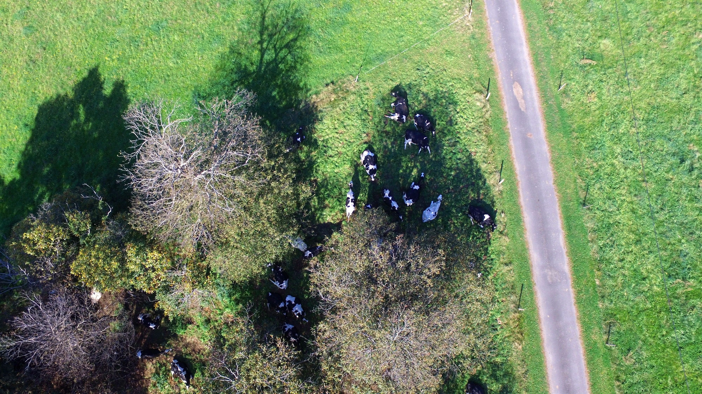
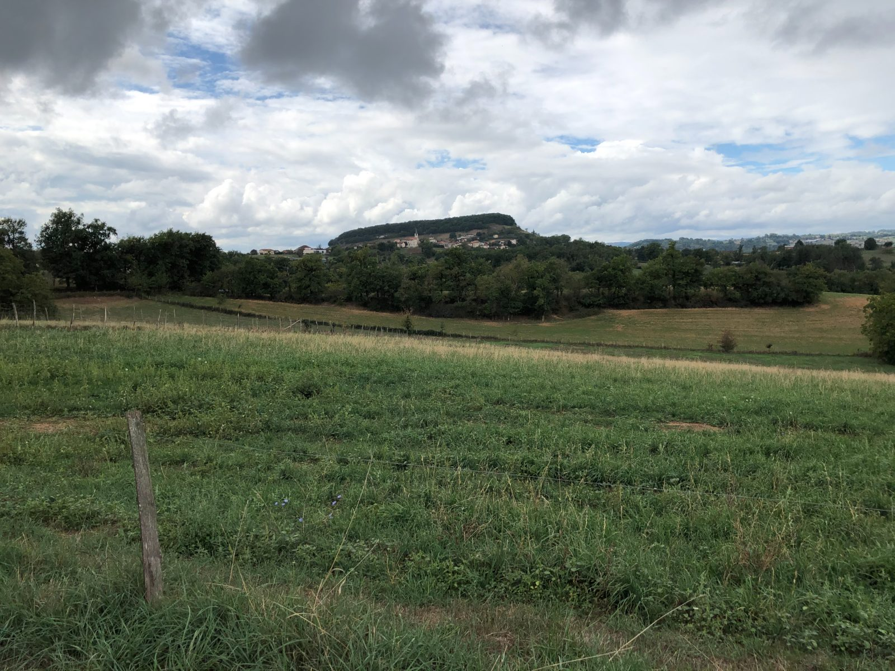
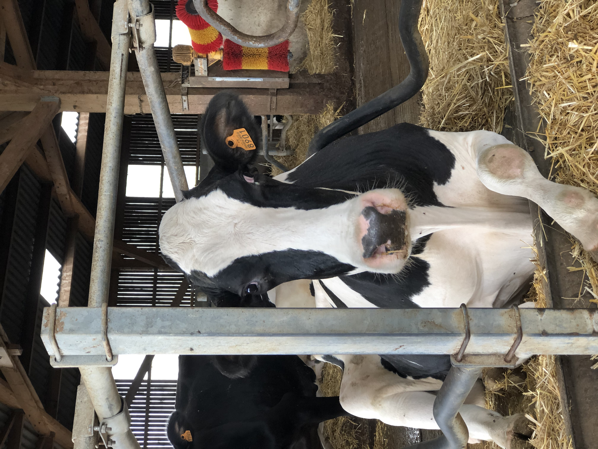
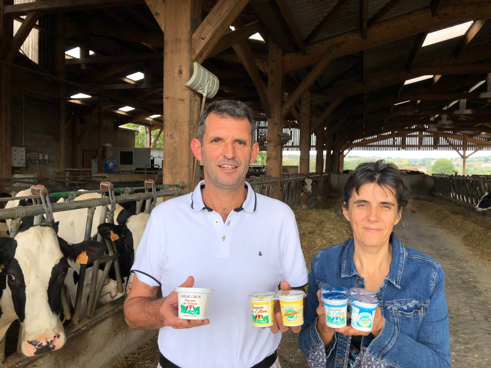

Quatre générations
sur les mêmes prés
Une exploitation, un atelier, une famille
La famille Figeac travaille la terre de la Berbezie depuis quatre générations. C'est en 1994 que la transformation laitière démarre à la ferme : Marie-José et Laurent Figeac construisent un atelier agréé CEE pour proposer directement aux gourmets des yaourts et de la crème issus de leur propre troupeau. Au-delà de la famille, la ferme s'appuie sur un salarié présent à mi-temps sur l'exploitation, côté élevage.
Trente ans plus tard, la formule n'a pas changé. La traite du matin part directement à l'atelier voisin, le lait est ensemencé, mis en pots, scellé, étiqueté — sans poudre ajoutée pour épaissir, sans conservateur pour faire durer.

Des prim'holstein nées et élevées sur place
Le troupeau compte une soixantaine de vaches laitières prim'holstein, toutes nées et élevées sur l'exploitation. Du printemps à l'automne, elles pâturent les prairies qui entourent la ferme.
L'hiver venu, elles reviennent en stabulation libre, sur paille, avec accès permanent à l'eau et à l'auge comprenant ration sèche de foin et céréales de l'exploitation. Brosses rotatives, ventilation naturelle : le bien-être d'un troupeau qu'on connaît une à une.

Circuit court, vraiment.
Du tank de stockage au pot fini, le lait ne quitte pas l'exploitation. Cette maîtrise complète, c'est la garantie d'un produit tracé, d'une qualité régulière, et d'un goût qu'on reconnaît. Notre atelier est agréé CEE. C'est la garantie sanitaire la plus exigeante pour la transformation laitière en France. Nous transformons environ 160 000 litres par an.

-
Atelier agréé CE
Agrément sanitaire européen FR 12.246.001 CE. Contrôles réguliers, traçabilité de la traite au pot.
-
Lait du jour
La traite du matin est transformée avant la nuit. Fraîcheur maximale, sans conservateur.
-
Bien-être animal
Pâturage du printemps à l'automne. Troupeau volontairement contenu.
-
Circuit court
Distribution directe : épiceries, fromagers, supermarchés régionaux, Halles de l'Aveyron.